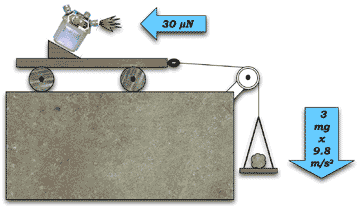

El micronewton (μN) es un submúltiplo decimal del newton. De acuerdo a la segunda ley de Newton, un newton es igual a la cantidad de fuerza requerida para imprimir una aceleración de un metro por segundo cuadrado a un objeto de un kilogramo de masa. Por consiguiente, 1 N = 1 kg·m/s².
